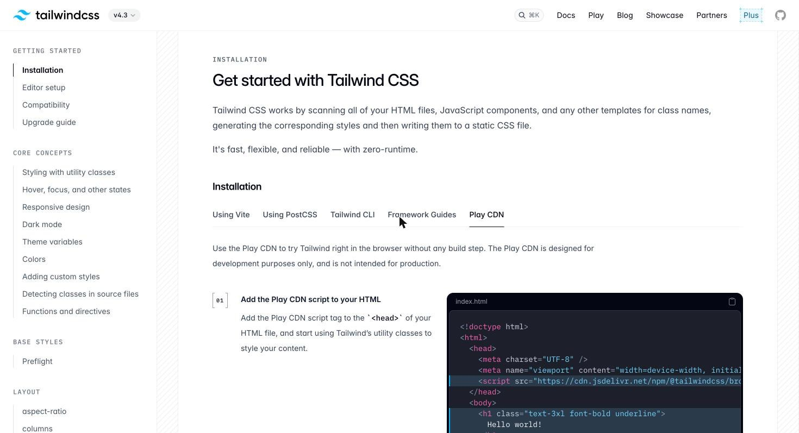
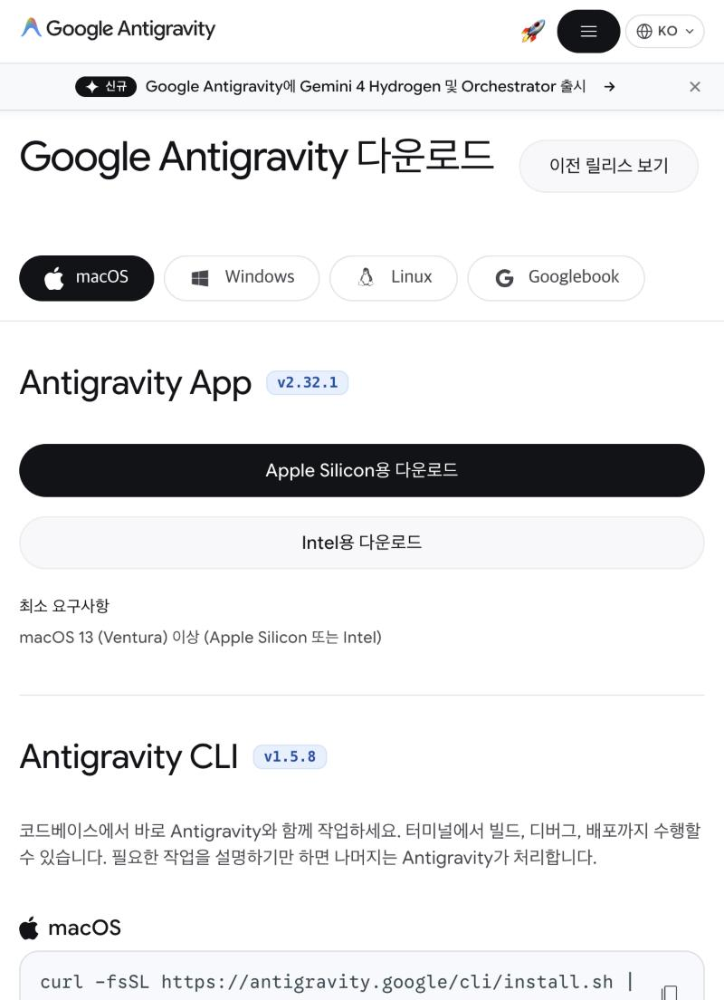

남이 만든 부품을 빌려 쓰고, 여러 개발 도구에서 같은 일을 해 봐요
어제 만든 날씨 배너를 라이브러리로 다듬고 그래프를 붙여요. 그다음 같은 폴더를 구글 안티그래비티와 VS Code에서 열어 보고, 지금까지 쓴 클로드 코드와 무엇이 같고 다른지 견줘요. 마지막으로 리모트 컨트롤로 휴대폰에서 일을 이어 가요.
교육 개요
| 시간 | 09:00–18:00 (점심 12:00–13:00, 수업 8시간) |
|---|---|
| 교과 | [기본] AI 서비스 개발 · 14일차 (총 18일) |
| 교육 목표 | 라이브러리와 프레임워크의 차이를 알고 초보자용 라이브러리를 써 보며, 같은 일을 여러 개발 환경에서 해 보고 고르는 기준을 설명한다. |
| 수업이 끝나면 | ① 라이브러리와 프레임워크를 비유로 설명하기 ② Tailwind와 Chart.js로 화면을 다듬고 그래프 붙이기 ③ IDE가 무엇인지 말하기 ④ 안티그래비티와 VS Code에서 같은 폴더를 열고 화면 띄우기 ⑤ 개발 환경 비교표 쓰기, 휴대폰에서 이어서 일하기 |
수업 전 준비
- 어제 만든 weather-banner 폴더: 내 컴퓨터에 있는지 봐요. 클라우드에서 만들었다면 클로드 코드에게 깃헙에 올려 달라고 해 두고, 오늘 내 컴퓨터로 클론해요.
- 설치 공간: 안티그래비티와 VS Code를 수업에서 함께 설치해요. 회사 컴퓨터라 설치가 막혀 있으면 미리 알려 주세요.
- 휴대폰 클로드 앱: 설치하고 로그인해 둬요. 5세션에서 써요.
타임테이블
| 시간 | 구분 | 내용 |
|---|---|---|
| 09:00–09:20 | 오늘의 단어 | 오늘의 단어 |
| 09:20–10:20 | SESSION 1 | 라이브러리와 프레임워크 |
| 10:30–12:00 | SESSION 2 | 라이브러리로 날씨 배너 다듬기 |
| 12:00–13:00 | 점심 | |
| 13:00–14:20 | SESSION 3 | 구글 안티그래비티로 같은 폴더 열기 |
| 14:30–15:40 | SESSION 4 | VS Code와 클로드 코드 확장 |
| 15:50–16:40 | SESSION 5 | 개발 환경 비교표 쓰기 |
| 16:50–17:30 | SESSION 6 | 휴대폰에서 이어서 일하기 |
| 17:30–18:00 | 정리 | 오늘 정리와 과제 |
오늘의 단어
오늘 처음 나오는 말을 먼저 짧게 짚고 시작해요.
| 단어 | 뜻 |
|---|---|
| 라이브러리 | 남이 만들어 둔 부품 모음. 필요한 부품만 골라 내 코드에서 불러 써요. |
| 프레임워크 | 앱의 뼈대와 규칙을 정해 둔 틀. 내 코드를 그 틀에 맞춰 채워 넣어요. |
| CDN | 라이브러리 파일을 인터넷 주소 하나로 바로 불러 쓰게 해 주는 곳 |
| IDE | 프로그램을 만드는 프로그램. 코드 편집기, 터미널, 미리보기를 한 창에 모아 둬요. |
| 확장(익스텐션) | IDE에 기능을 더하는 추가 프로그램. VS Code의 클로드 코드 확장처럼요. |
| 리모트 컨트롤 | 내 컴퓨터에서 돌던 클로드 코드 세션을 휴대폰이나 다른 브라우저에서 이어 보는 기능 |
라이브러리와 프레임워크
개발자가 "리액트로 갈까요, 그냥 HTML로 갈까요?"라고 물을 때 기획자가 대화에 낄 수 있도록, 두 말의 차이를 비유로 잡아요.
개념1-1. 부품 상자와 집의 뼈대
| 구분 | 라이브러리 | 프레임워크 |
|---|---|---|
| 비유 | 필요할 때 꺼내 쓰는 부품 상자(망치, 경첩) | 이미 세워 둔 집의 뼈대. 방 배치를 그 틀에 맞춰요 |
| 누가 주도하나 | 내 코드가 부품을 불러요 | 틀이 내 코드를 정해진 때에 불러요 |
| 바꾸기 | 부품 하나만 빼고 바꾸기 쉬워요 | 중간에 바꾸기 어려워요. 처음에 잘 골라야 해요 |
| 지금까지 본 예 | 날씨 화면에 붙일 그래프 부품(Chart.js), 디자인 부품(Tailwind) | 구글 AI 스튜디오가 기본으로 만드는 리액트(React) 앱 |
출처: Google AI for Developers Build apps in Google AI Studio("React is the default") (2026-11-13 확인)
개념1-2. 초보자가 먼저 써 볼 만한 것
| 이름 | 종류 | 하는 일 | 이럴 때 |
|---|---|---|---|
| Tailwind CSS | 디자인 라이브러리(CSS 프레임워크라고도 불러요) | "글자 크게", "여백 넓게" 같은 짧은 이름표를 붙여 꾸며요 | 디자인을 빨리 다듬고 싶을 때 |
| Chart.js | 그래프 라이브러리 | 숫자 목록을 막대·선 그래프로 그려요 | 대시보드, 날씨·매출 그래프 |
| React | 화면 프레임워크(라이브러리) | 화면을 부품(컴포넌트)으로 나눠 만들어요 | 화면이 많고 복잡한 서비스 |
오늘은 파일 하나에 주소 한 줄로 불러 쓰는 Tailwind와 Chart.js만 써요. 설치나 빌드가 필요 없어서, 지난주처럼 깃헙 페이지스에 그대로 올려도 열려요.
라이브러리로 날씨 배너 다듬기
어제 만든 날씨 배너에 Tailwind로 디자인을, Chart.js로 3시간 간격 기온 그래프를 더해요.
개발자·구현2-1. Tailwind로 다듬기
요청: weather-banner의 화면을 Tailwind CSS로 다시 꾸민 index-tailwind.html을 만들어 줘. 내용: 원래 index.html은 그대로 둬. Tailwind는 CDN 주소 한 줄로 불러와 줘. 기온 숫자는 크게, 문구는 카드 안에, 휴대폰 너비에서도 잘 보이게 해 줘. 형식: 새 파일 하나. 다 만들면 Tailwind를 불러오는 줄이 몇 번째 줄인지 알려 줘.
두 파일을 나란히 열어 견줘요.

Tailwind 문서에는 Play CDN이 개발·연습용이고 실제 서비스(production)용은 아니라고 적혀 있어요. 실제 서비스로 낼 때는 개발자와 설치 방법을 다시 정해요.
출처: Tailwind CSS Play CDN("designed for development purposes only, and is not intended for production") (2026-11-16 확인)
index-tailwind.html의 코드를 열고, 태그에 붙은 짧은 이름표(예: text-4xl, p-6)가 무엇을 뜻하는지 클로드 코드에게 하나만 물어봐요.
개발자·구현2-2. Chart.js로 3시간 간격 기온 그래프 붙이기
요청: index-tailwind.html 아래에 오늘 서울의 3시간 간격 기온 선 그래프를 Chart.js로 붙여 줘. 내용: 어제 만든 날씨 서버를 그대로 써서, OpenWeather 3시간 간격 5일 예보(3-hour Forecast)에서 오늘 남은 시간의 기온을 받아 와 줘. 키는 어제처럼 서버가 .env에서 읽게 해 줘. Chart.js도 CDN 주소 한 줄로 불러와 줘. 형식: 바뀐 줄(diff)을 먼저 보여 주고, 승인하면 반영해 줘. 그래프에 쓴 API 주소를 한 줄로 알려 줘.

| 견줄 것 | 라이브러리 없이(어제) | 라이브러리로(오늘) |
|---|---|---|
| 디자인을 바꾸는 데 걸린 시간 | ||
| 코드 줄 수 | ||
| 불러오는 바깥 주소 | OpenWeather(내 서버를 거쳐) | OpenWeather(내 서버를 거쳐) + Tailwind + Chart.js |
라이브러리를 바깥 주소에서 불러오면, 그 주소가 막혔을 때 화면이 깨질 수 있어요. 지난주 목요일에 네트워크 탭에서 바깥 연결을 찾았던 것처럼, 네트워크 탭에서 Tailwind와 Chart.js 주소가 불러와지는지 확인해요.
결과2-3. 결과
이렇게 보이면 성공휴대폰 너비에서도 카드와 그래프가 잘리지 않는다
구글 안티그래비티로 같은 폴더 열기
구글이 만든 AI 개발 도구 안티그래비티를 설치하고, 오전에 만든 weather-banner 폴더를 열어 같은 일을 시켜 봐요.
개념3-1. 안티그래비티는 여러 제품이에요
다운로드 화면을 열면 이름이 같은 제품이 여러 개 보여요. 헷갈리지 않게 먼저 나눠요.

| 제품 | 무엇인가요 | 오늘 쓰나요 |
|---|---|---|
| Antigravity App | 데스크톱 앱. 클로드 데스크톱 앱처럼 대화로 일을 맡겨요 | 설치해서 써요 |
| Antigravity IDE(독립 실행형) | 코드 편집기·에이전트 패널이 한 창에 있는 IDE | 원하면 함께 설치해요 |
| Antigravity CLI | 터미널에서 쓰는 버전 | 쓰지 않아요 |
| IDE용 확장 | VS Code, JetBrains(IntelliJ IDEA 등) 같은 편집기에 안티그래비티를 붙이는 확장 | 참고만 해요 |

출처: Google Antigravity 다운로드(Antigravity App v2.32.1, CLI v1.5.8, IDE 독립 실행형 v2.7.0, VS Code·JetBrains 등 확장) (2026-11-15 확인)
실습3-2. 설치하고 weather-banner 폴더 열기
antigravity.google/download에서 내 컴퓨터(macOS·Windows)에 맞는 단추를 눌러 내려받고 설치해요.
구글 계정으로 로그인해요.
폴더 열기로 weather-banner 폴더를 골라요. 클로드 코드에서 폴더를 고르던 것과 같아요.
요청: 이 폴더의 index-tailwind.html을 로컬 서버로 열어 줘. 내용: 다른 파일은 바꾸지 마. 서버를 켜는 명령은 실행하기 전에 보여 줘. 형식: 연 주소와 서버를 끄는 방법을 한 줄씩.
확인할 점
- 안티그래비티에서도 같은 화면(카드 + 그래프)이 열린다
- 명령을 실행하기 전에 승인을 묻는지, 묻는다면 어떻게 묻는지 적었다
VS Code와 클로드 코드 확장
개발자들이 가장 많이 쓰는 편집기 중 하나인 VS Code에 클로드 코드 확장을 붙여, 같은 폴더를 열어요.
실습4-1. VS Code 설치하고 클로드 코드 확장 붙이기
code.visualstudio.com/download에서 내 컴퓨터에 맞는 단추를 눌러 설치해요. 무료예요.
VS Code를 열고 Cmd+Shift+X(윈도우는 Ctrl+Shift+X)로 확장 화면을 열어요.
"Claude Code"를 찾아 [Install]을 눌러요. 처음 열 때 클로드 계정으로 로그인해요. API 키는 필요 없어요.
[File] → [Open Folder]로 weather-banner 폴더를 열어요.

출처: Claude Code 공식 문서 Use Claude Code in VS Code(VS Code 1.94.0 이상, 유료 클로드 구독이면 API 키 불필요, Cmd+Shift+X로 확장 설치) (2026-11-15 확인)
실습4-2. 같은 일을 시키고, 터미널 직접 보기
요청: 이 폴더의 index-tailwind.html 제목 글자를 '오늘 날씨와 어울리는 선물'로 바꿔 줘. 내용: 다른 곳은 바꾸지 마. 형식: 바뀐 줄(diff)을 먼저 보여 주고, 승인하면 반영해 줘.
VS Code에서는 diff가 편집기 안에 바로 열려요. 데스크톱 앱과 어떻게 다른지 봐요.
Ctrl+`(백틱)으로 VS Code 안의 터미널을 열고, 지난주 목요일에 연습한
ls(윈도우는dir)를 쳐서 파일 목록을 봐요.
개발 환경 비교표 쓰기
오늘 써 본 세 도구를 한 표에 놓고, 어떤 일에 무엇을 고를지 정해요.
정리5-1. 세 도구 비교표
| 견줄 것 | 클로드 데스크톱 앱(Code 탭) | 구글 안티그래비티 | VS Code + 클로드 코드 확장 |
|---|---|---|---|
| 설치 | 클로드 앱 하나 | VS Code + 확장 | |
| AI 모델 | 클로드 | 클로드 | |
| 폴더 열기 | 입력창 아래 폴더 단추 | [File] → [Open Folder] | |
| 바뀐 곳(diff) 보기 | diff 화면에서 승인 | 편집기 안에서 바로 | |
| 터미널 | 클로드에게 맡기거나 터미널 창 | 편집기 아래에 바로 | |
| 나는 이럴 때 쓰겠다 |
결과5-2. 결과
이렇게 보이면 성공'나는 이럴 때 쓰겠다' 칸이 세 도구 모두 채워져 있다
휴대폰에서 이어서 일하기
3주차 금요일에 리모트 컨트롤 스위치를 확인했던 것 기억하시나요? 오늘은 실제로 휴대폰에서 일을 이어 가요.
실습6-1. 리모트 컨트롤로 이어 하기
데스크톱 앱 Code 탭에서 weather-banner 폴더 세션을 열어요. 사이드 메뉴 [환경]의 Remote Control 스위치를 켜요.
휴대폰 클로드 앱을 열어 같은 세션을 찾아 들어가요.
휴대폰에서 "제목 아래에 '오늘만 무료 포장' 문구를 한 줄 넣어 줘"라고 보내요.
컴퓨터 화면에서 파일이 바뀌는지 봐요. 작업은 내 컴퓨터에서 실행되고, 휴대폰은 리모컨 역할만 해요.
막히면
| 이렇게 보이면 | 이렇게 해요 |
|---|---|
| Remote Control을 켤 수 없어요 | 회사·기관 계정은 조직 관리자(Owner)가 먼저 켜 줘야 해요. |
| 휴대폰에서 세션이 안 보여요 | 컴퓨터가 잠자기 모드에 들어가면 연결이 끊겨요. 컴퓨터를 깨워 두고 다시 봐요. |
출처: Claude Code 공식 문서 Remote Control(작업은 내 컴퓨터에서 실행, Team·Enterprise는 Owner가 먼저 켜야 함) (2026-11-13 확인)
결과6-2. 결과
이렇게 보이면 성공휴대폰에서 보낸 문구가 컴퓨터의 파일과 화면에 보인다
오늘 정리와 과제
오늘의 규칙
- 라이브러리는 부품, 프레임워크는 뼈대. 프레임워크는 처음에 잘 고른다
- 바깥 주소에서 불러오는 라이브러리도 네트워크 탭에서 확인한다
- 도구가 바뀌어도 '폴더 열기 → 시키기 → diff 보고 승인'의 흐름은 같다
- 도구는 같은 기준표에 넣어 견주고 고른다
라이브러리로 다듬은 날씨 배너 + 개발 환경 비교표 + 휴대폰에서 이어 한 작업
내일 크롬 확장 프로그램을 만들어요. 회사나 일상에서 크롬으로 매일 반복하는 일 하나를 적어 와요. 예: 자주 쓰는 문장 붙여 넣기, 페이지의 제목·주소 모으기